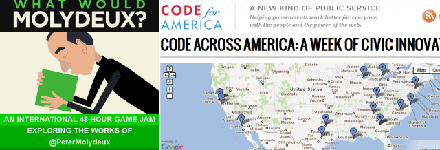

7 Reasons Why You Should Try a Hackathon
by phil on Monday Apr 2, 2012 10:37 PM

I just went to my second hackathon in a month, and I'd have to say, I think these are the future. And it's not for the reasons you would expect. It's not that I believe the apps you create in a 24 or 48-hour period are somehow better than a full-blown production cycle. Rather, it's that I've rarely experienced such a high concentration of education, networking, and creativity in a such short period of time.
Backgrounder
What is a hackathon? A hackathon (also known as a codejam) is where a group of like-minded people agree to spend a day or a weekend making something arbitrary from start to finish. The most common example is a gaming hackathon like Ludum Dare. At the start of the event, a game theme is posted on the web, and you then have 48 hours to create a game based on that theme. Ludum Dare is conducted virtually, but the hackathons I've gone to were all hosted at real life spaces. There, you can form your own teams or let yourself get paired up with strangers. And hackathons are not just for games, but for any kind of thing where makers can get together and make a product from start-to-finish in a short period of time.
The most recent hackathon one I went to was Molydeux, where we had 48 hours to make a game based on one of the weird game ideas from the parody Twitter account Peter Molydeux. It's a parody of game designer Peter Molyneux, who is known for over-ambitious game premises. The classic parody game idea is, "Is it possible to make a green square feel alive?" The game idea that Zach and I chose was as follows:
So we thought of making a game where you start out as a soldier killing people for about a minute. At the end of the minute, though, a twist is revealed. All the people you killed become ghosts that stick to you when you return home. The ghosts represent your guilt, and you have to do good deeds to alleviate your guilt. Perhaps you have to help old people cross the street or stop robberies. However, because you have so many ghosts around you, the elderly get scared of you, and run away. You're a foresaken war vet, returning home, struggling for redemption.
Through this hackathon and the one that I went to before it (where we had to create an app for our city government), I got to ...
1. Learn about the creative process
Zach and I have been friends for a while, and we have the same crazy sense of humor, but we have never worked together. He's always made comics on his own and I've always made iOS apps on my own. But here, I could see how our pattern of banter that we've developed over the years translated really well into coming up with a funny game idea. With him curating tweets from Molydeux's account that he thought would get a laugh out of me and me adding the moral twists and cruxes of the forsaken soldier, we were in sync like improv actors. I've always shied away from collaboration, but this event opened my eye to new possibilities.
2. Pop my cherry on engines and toolsets
The start of a hackathon has the same adrenaline and intensity of a race start. Because of the compressed time scale, you have to be incredible resourceful. After coming up with a game idea, I needed to choose a game engine fast. There were three clear choices: Unity, Game Salad, and Game Maker. So I simultaneously downloaded demos for all three and started fiddling with them. I then peppered other attendees at the hackathon as to what engines they used. I carried around a piece of paper, tallying the engine choices, which provided a very quick-and-dirty market survey.
3. Zoom through steep learning curves
I got stuck while getting started with the Unity engine, but sitting 10 feet to the right of me was someone who was already familiar with it. The 10 minutes of coaching that I got from him was equivalent to two hours of going through tutorial videos. It was so useful because it was applied tutoring. I had a specific thing in my mind I wanted to accomplish (setting up a 2D overhead game). He told me, "okay, use a fixed camera here, add a plane object there, put this there" etc. and bam, I had my scene all set up. This was an incredibly richer experience than the Q&A I saw when I Googled on forums with the same question.
4. Develop deep connections
Plus, since he had been working at the table next to my group, we bounced other game ideas off of each other and we got a feel for how we worked. I later added him in Facebook, and it turned out that we had worked at the same company Aspyr years ago, and that he went on to work at BioWare (both video game companies). Who knows, I may return back to the game industry and this connection will prove useful. Plus, this shared experience at this hackathon will probably be much more memorable than a random handshake would have been had I bumped into him at the Austin Game Developer Conference instead.
5. Mingle with people who actually want to Get Things Done
The quality of attendance was so much better than at a conference. I went to a Game Developer Conference in Austin once, and there are so many people who'd never created a game or worked in the industry. At the hackathon, there were tons of industry folks as well as dabblers. I think a hackathon raises the bar much higher because everybody is there to get things done. Yes there may be "wannabes" but they're at a level where they want to actually get their hands dirty. Nobody is there just to network or just to watch. Those are all secondary to gaining experience actually making.
6. Get an insider's look at an industry
About a month ago, I did the Code for America hackathon, and that was a thrill. Code for America is a non-profit that helps governments (city, state, or national) leverage the web for civic benefit. I worked with a random group that made an app for bicyclists to help report good and bad intersections from their smartphones. I've always wanted to know what it would be like to actually do something for my city, and I felt like I learned more in that day than I would've spending two months as an intern at the City of Austin.
7. Make new friends who know how I work
Because it's like a race, there's such an intense shared struggle, it just naturally binds people together. Afterwards, I went to a follow-up happy hour and even presented at a board meeting at the City. The event attracted a lot of activist-minded people, and so I feel like if I wanted to do anything in tech and government, I would know exactly who to email. Everybody got to see how I work, and so in a way, the experience was like a trial interview.
The Future
I'm always looking for new ways to work. Both of these hackathons were hosted at my home co-working space, Conjunctured, which is a place for independent mobile professionals to share office space. I find co-working to be an experiment in a new kind of work. Perhaps hackathons are a similar conceptual experiment. It's like re-imagining the workplace as a venue for events and shared experiences. If you are a designer, artist, sound engineer, programmer or anybody just interested in making something, then you're missing out if you haven't tried a hackathon.